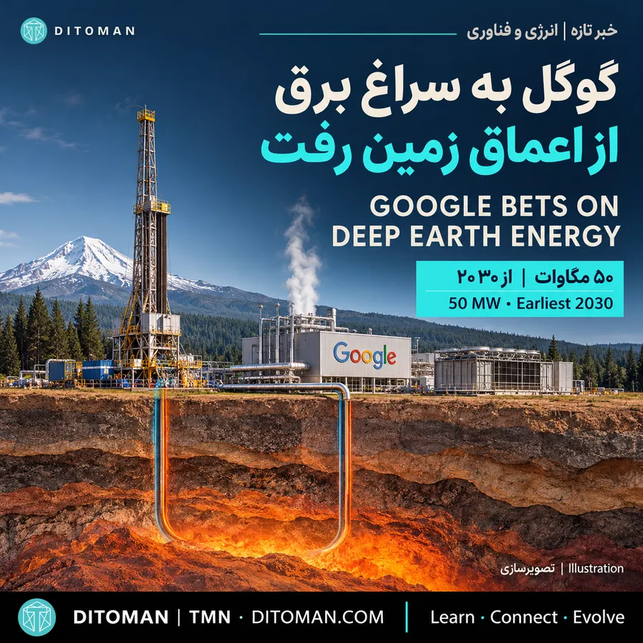
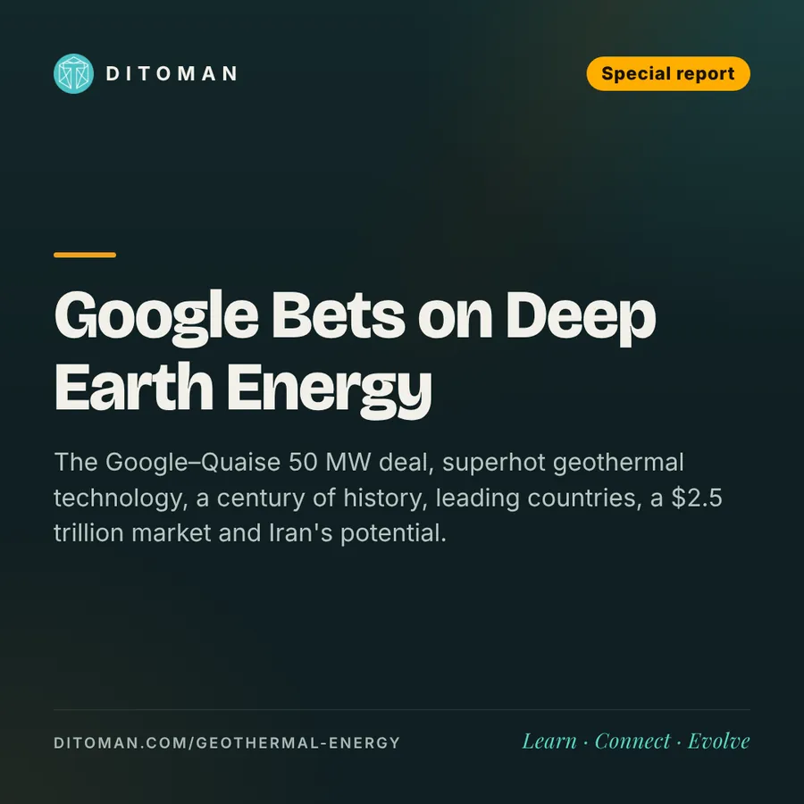
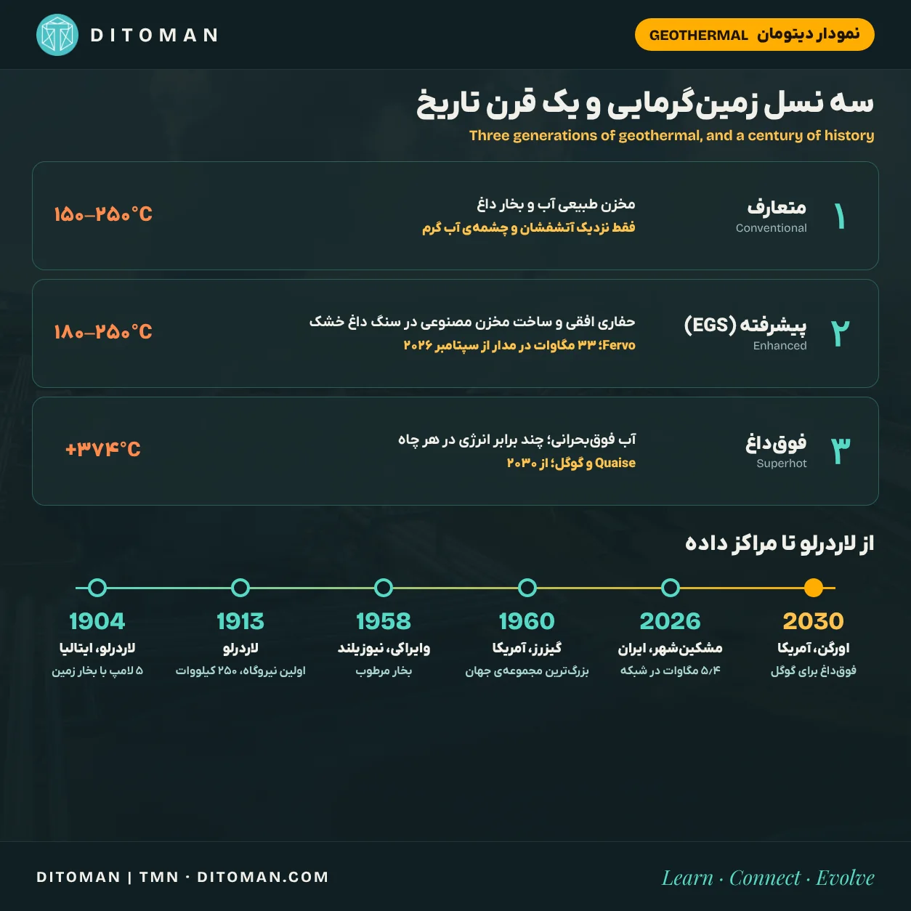
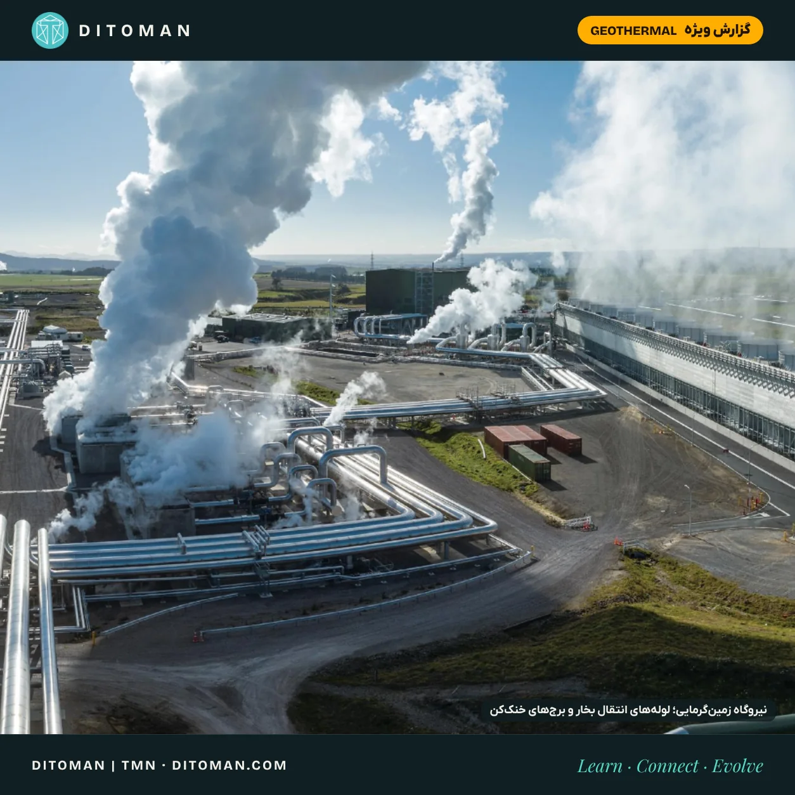
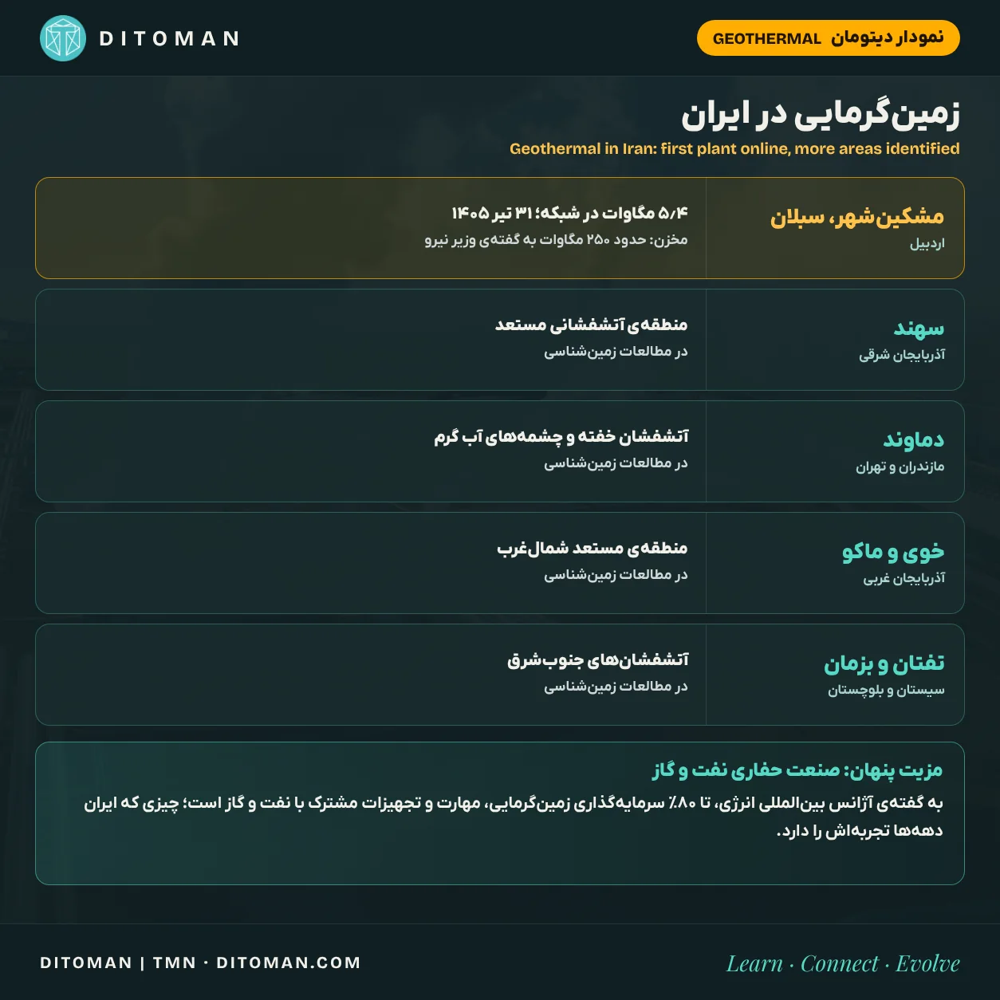

گوگل به سراغ برق از اعماق زمین رفت؛ انرژی ۲۴ ساعته برای عصر هوش مصنوعی
Google bets on deep Earth energy: round-the-clock power for the AI age
قرارداد ۵۰ مگاواتی گوگل و Quaise، فناوری زمینگرمایی فوقداغ، یک قرن تاریخ از لاردرلو، بزرگترین کشورها، بازار ۲٫۵ تریلیون دلاری و ظرفیت ایران.
The Google–Quaise 50 MW deal, superhot geothermal technology, a century of history, leading countries, a $2.5 trillion market and Iran's potential.
در یک نگاه
گوگل ۱۷ نوامبر ۲۰۲۶ قراردادی برای خرید ۵۰ مگاوات برق زمینگرمایی فوقداغ از شرکت آمریکایی Quaise Energy امضا کرد. برق قرار است از گرمای سنگهای عمیق زمین در ایالت اورگن تولید شود و از ۲۰۳۰، اگر پروژه طبق برنامه پیش برود، به مرکز دادهی گوگل در شهر دالز برسد (ThinkGeoEnergy، OPB).
| شاخص | رقم |
|---|---|
| ظرفیت قرارداد | ۵۰ مگاوات |
| زودترین زمان تحویل | ۲۰۳۰ |
| ارزش قرارداد خرید برق (والاستریت ژورنال) | بیش از ۵۰۰ میلیون دلار |
| هزینهی برآوردی پروژه (والاستریت ژورنال) | حدود ۳۵۰ میلیون دلار |
| ظرفیت جهانی زمینگرمایی، پایان ۲۰۲۵ | ۱۷٬۱۷۳ مگاوات |
| سرمایهگذاری لازم تا ۲۰۵۰ (آژانس بینالمللی انرژی) | ۲٫۵ تریلیون دلار |
| اولین نیروگاه زمینگرمایی ایران | مشکینشهر، ۵٫۴ مگاوات، اتصال به شبکه ۳۱ تیر ۱۴۰۵ |
ارقام آیندهی پروژهها برآورد و برنامهاند، نه تولید واقعی. این گزارش آنها را جدا از دادههای ثبتشده آورده است.
1. خبر دقیقاً چیست؟
- قرارداد: خرید برق ۵۰ مگاواتی از پروژهی «Obsidian» شرکت Quaise در مرکز اورگن، برای مرکز دادهی گوگل در شهر دالز
- فاز اول، ۵۰ مگاوات: با حفاری متعارف نفت و گاز، برای رسیدن به سنگهای فوقداغ؛ حفاری از ژوئیهی ۲۰۲۶ شروع شده
- فاز دوم، ۲۵۰ مگاوات: قرار است اولین نیروگاه جهان باشد که با حفاری امواج میلیمتری کار میکند؛ فناوریای که هنوز در مقیاس تجاری اثبات نشده
- پول پشت پروژه: Quaise در اوت ۲۰۲۶ دور سرمایهگذاری ۱۸۰ میلیون دلاری را بست؛ ۳۵ میلیون دلارش از Nabors، یکی از بزرگترین شرکتهای حفاری جهان
- دو عدد متفاوت: ۵۰۰ میلیون دلار، ارزش کل خرید برق در طول قرارداد است و ۳۵۰ میلیون دلار، هزینهی ساخت پروژه (والاستریت ژورنال). قیمت هر مگاواتساعت منتشر نشده است
- اشتغال: Quaise پیشبینی کرده ساخت پروژه ۲۰۰ تا ۴۰۰ شغل موقت و بهرهبرداری آن بیش از ۵۰ شغل دائمی بسازد؛ این برآورد است
2. چرا گوگل سراغ گرمای زمین رفته؟
مراکز دادهی هوش مصنوعی ۲۴ ساعته برق میخواهند. خورشید شب نمیتابد و باد همیشه نمیوزد. زمینگرمایی تنها منبع تجدیدپذیری است که شب و روز و در هر فصل، یکنواخت کار میکند.
- ضریب کارکرد: طبق آژانس بینالمللی انرژی، نیروگاههای زمینگرمایی در ۲۰۲۳ بهطور میانگین بیش از ۷۵٪ زمان با ظرفیت کامل کار کردهاند؛ باد کمتر از ۳۰٪ و خورشیدی کمتر از ۱۵٪ (IEA)
- سبد زمینگرمایی گوگل: قرارداد ۳۹۶ مگاواتی با Fervo در یوتا (سپتامبر ۲۰۲۶)، ۱۱۵ مگاوات در نوادا و قرارداد با Ormat؛ و حالا Quaise (Canary Media)
- در یک نگاه بزرگتر: گوگل از ۲۰۱۰ تا ۲۰۲۵ بیش از ۲۴۰ قرارداد برای حدود ۳۵ گیگاوات انرژی پاک امضا کرده است
3. برق از سنگ داغ چطور تولید میشود؟

هرچه پایینتر بروید، زمین داغتر میشود؛ بهطور میانگین حدود ۲۵ تا ۳۰ درجه برای هر کیلومتر. ایده ساده است: بهجای سوزاندن سوخت، از گرمایی استفاده کنیم که از قبل آنجاست.
| نسل | چطور کار میکند | محدودیت |
|---|---|---|
| زمینگرمایی متعارف | از مخزن طبیعی آب و بخار داغ، معمولاً نزدیک آتشفشانها و چشمههای آب گرم، برق تولید میشود | فقط در نقاط خاصی از جهان |
| زمینگرمایی پیشرفته (EGS) | با حفاری افقی و شکاف دادن سنگ داغ خشک، مخزن مصنوعی ساخته و آب در آن گردانده میشود | هزینهی حفاری؛ نمونهی موفق: Fervo |
| زمینگرمایی فوقداغ | حفاری تا سنگهای بیش از ۳۷۴ درجه، جایی که آب «فوقبحرانی» میشود و چند برابر انرژی حمل میکند | عمق زیاد؛ ابزار معمولی در این دما دوام نمیآورد |
- حفاری امواج میلیمتری چیست؟
فناوریای که در مرکز علوم پلاسما و همجوشی دانشگاه MIT توسعه یافت و Quaise برای تجاریسازی آن تأسیس شد. بهجای متهی مکانیکی، از پرتو انرژی شبیه به راکتورهای همجوشی برای ذوب و تبخیر سنگ استفاده میکند؛ متهای که در عمق زیاد و دمای بالا کند نمیشود
- ادعای ۱۰ برابر: Quaise میگوید هر چاه فوقداغ میتواند تا ۱۰ برابر یک چاه معمولی برق بدهد؛ این توان بالقوهی فناوری است، نه عملکرد اندازهگیریشدهی این نیروگاه
4. تاریخچه؛ از حمامهای رومی تا مراکز داده
| زمان | رویداد |
|---|---|
| دوران باستان | استفاده از چشمههای آب گرم برای حمام و درمان؛ از روم تا ایران و چین |
| ۱۹۰۴ | شاهزاده پیرو جینوری کونتی در لاردرلو، ایتالیا، با بخار زمین ۵ لامپ روشن کرد؛ اولین برق زمینگرمایی جهان |
| ۱۹۱۳ | اولین نیروگاه تجاری زمینگرمایی جهان، ۲۵۰ کیلووات، در لاردرلو |
| دههی ۱۹۳۰ | آغاز گرمایش شهری با آب زمینگرمایی در ریکیاویک، ایسلند |
| ۱۹۵۸ | نیروگاه وایراکی در نیوزیلند؛ اولین نیروگاه با «بخار مرطوب» |
| ۱۹۶۰ | گیزرز در کالیفرنیا؛ آغاز زمینگرمایی تجاری آمریکا و بزرگترین مجموعهی زمینگرمایی امروز جهان |
| دههی ۱۹۷۰ | آزمایش «سنگ داغ خشک» در فنتون هیل آمریکا؛ ریشهی زمینگرمایی پیشرفته |
| ۱۹۷۵ | آغاز اکتشاف زمینگرمایی در ایران |
| ۲۰۲۳ | نیروگاه آزمایشی ۳٫۵ مگاواتی Fervo در نوادا؛ اولین برق تجاری زمینگرمایی پیشرفته |
| ۳۱ تیر ۱۴۰۵ (۲۲ ژوئیه ۲۰۲۶) | اتصال نیروگاه ۵٫۴ مگاواتی مشکینشهر به شبکهی سراسری ایران |
| ۳۰ سپتامبر ۲۰۲۶ | اولین واحد ۳۳ مگاواتی Cape Station شرکت Fervo در یوتا وارد مدار تجاری شد |
| ۱۷ نوامبر ۲۰۲۶ | قرارداد گوگل و Quaise؛ اولین قرارداد تجاری برق زمینگرمایی فوقداغ |
5. امروز در کجای جهان؟

کل ظرفیت زمینگرمایی جهان در پایان ۲۰۲۵ به ۱۷٬۱۷۳ مگاوات رسید (ThinkGeoEnergy):
| کشور | مگاوات | میدان اصلی |
|---|---|---|
| آمریکا | ۳٬۹۵۳ | گیزرز کالیفرنیا، نوادا، یوتا |
| اندونزی | ۲٬۷۴۲ | جاوه و سوماترا |
| فیلیپین | ۲٬۰۳۴ | لیته و لوزون |
| ترکیه | ۱٬۷۹۷ | درهی مندرس، غرب آناتولی |
| نیوزیلند | ۱٬۲۵۹ | وایراکی و منطقهی تائوپو |
| کنیا | ۹۸۰ | اولکاریا، درهی بزرگ ریفت |
| مکزیک | ۹۷۶ | سرو پریتو |
| ایتالیا | ۹۱۶ | لاردرلو، توسکانی |
| ایسلند | ۸۰۸ | هلیشیدی و نسیاولیر |
| ژاپن | ۶۰۷ | کیوشو و توهوکو |
- همسایهی موفق: ترکیه، با شرایط زمینشناسی نزدیک به ایران، در کمتر از دو دهه به رتبهی چهارم جهان رسیده است
- کنیا: کشوری آفریقایی که زمینگرمایی بخش بزرگی از برقش را تأمین میکند؛ نمونهای از اینکه این فناوری فقط برای کشورهای ثروتمند نیست
6. بازار؛ چقدر پول در این صنعت است؟
طبق گزارش «آیندهی انرژی زمینگرمایی» آژانس بینالمللی انرژی (IEA):
| شاخص | رقم |
|---|---|
| سهم امروز از تقاضای انرژی جهان | کمتر از ۱٪ |
| سهم ممکن از رشد تقاضای برق تا ۲۰۵۰ | تا ۱۵٪ |
| ظرفیت مقرونبهصرفهی ممکن | تا ۸۰۰ گیگاوات؛ نزدیک ۶٬۰۰۰ تراواتساعت در سال |
| سرمایهگذاری تجمعی | ۱ تریلیون دلار تا ۲۰۳۵ و ۲٫۵ تریلیون دلار تا ۲۰۵۰ |
| اوج سرمایهگذاری سالانه | ۱۴۰ میلیارد دلار |
| کاهش هزینهی نسل جدید | تا ۸۰٪ تا ۲۰۳۵؛ حدود ۵۰ دلار برای هر مگاواتساعت |
| همپوشانی با صنعت نفت و گاز | تا ۸۰٪ سرمایهگذاری، مهارت و تجهیزات مشترک |
- Fervo؛ اولین ستارهی بورسی: Fervo حالا با نماد FRVO در بورس است؛ ۱٬۰۵۴ مگاوات قرارداد خرید برق و حدود ۱۱٫۹ میلیارد دلار درآمد قراردادی آینده دارد. هدفش ۱٫۱ گیگاوات تا ۲۰۳۰ است. سهم آن پرنوسان بوده: حدود ۱۰٫۹ دلار، در برابر سقف ۵۲ هفتهای ۴۲٫۶ دلار (Investing.com)
- محاسبهی دیتومان: ۵۰ مگاوات اگر هر ۸٬۷۶۰ ساعت سال کار کند، حداکثر حدود ۴۳۸ گیگاواتساعت برق در سال میدهد. با ضریب کارکرد ۷۵ تا ۹۰٪، حدود ۳۳۰ تا ۳۹۰ گیگاواتساعت. این فقط مقیاس است، نه پیشبینی تولید
7. ایران؛ ظرفیتی که تازه بیدار شده

- اولین نیروگاه: نیروگاه زمینگرمایی مشکینشهر در دامنهی سبلان، استان اردبیل، در ارتفاع حدود ۲٬۷۰۰ متر، با ظرفیت ۵٫۴ مگاوات در ۳۱ تیر ۱۴۰۵ به شبکهی سراسری برق وصل شد (ThinkGeoEnergy، تهران تایمز)
- راه طولانی: اکتشاف از ۱۹۷۵ شروع شد. موعد راهاندازی در ۲۰۱۳، ۲۰۱۵، ۲۰۲۱ و ۲۰۲۲ اعلام شد و هر بار عقب افتاد. چاههایی تا عمق ۳٬۰۰۰ متر حفر شده است
- ظرفیت همین منطقه: به گفتهی وزیر نیرو، مخزن زیر این نیروگاه ظرفیت تولید حدود ۲۵۰ مگاوات را دارد و چاههای موجود میتوانند تا ۳۰ مگاوات برق بدهند
- مناطق مستعد دیگر: در مطالعات زمینشناسی ایران، مناطق آتشفشانی و چشمههای آب گرم مانند سبلان، سهند، دماوند، خوی و ماکو، و تفتان و بزمان از مستعدترین مناطق شناخته شدهاند
- مزیت پنهان ایران: آژانس بینالمللی انرژی میگوید تا ۸۰٪ سرمایهگذاری زمینگرمایی، مهارت و تجهیزات مشترک با نفت و گاز است. ایران دهها سال تجربهی حفاری نفت و گاز، دکل، متخصص و شرکت حفاری دارد؛ همان چیزی که آمریکا امروز با شرکتهایی مثل Nabors به زمینگرمایی آورده است
- کاربردهای غیر از برق: گرمایش ساختمان و گلخانه، آب گرم صنعتی، خشک کردن محصولات کشاورزی و گردشگری درمانی؛ مثل چشمههای آب گرم سرعین در همان استان
8. چالشها
- هزینه و ریسک حفاری: هر چاه عمیق میلیونها دلار هزینه دارد و ممکن است به آب یا دمای کافی نرسد
- فناوری اثباتنشده: حفاری امواج میلیمتری هنوز در مقیاس تجاری کار نکرده است
- زمینلرزهی القایی: شکاف دادن سنگ در زمینگرمایی پیشرفته میتواند لرزههای کوچک ایجاد کند و پایش دقیق میخواهد
- زمان: از اکتشاف تا برق، معمولاً چند سال و گاهی چند دهه؛ همانطور که در مشکینشهر دیدیم
- برای ایران: تأمین تجهیزات خاص، تأمین مالی و جذب سرمایهگذار
9. سناریوها تا ۲۰۳۵
| سناریو | چه اتفاقی میافتد |
|---|---|
| پیشرفت سریع | Fervo و Quaise به هدف میرسند؛ هزینهها مثل خورشیدی در دههی ۲۰۱۰ سقوط میکند و زمینگرمایی به منبع اصلی برق مراکز داده تبدیل میشود |
| رشد تدریجی | زمینگرمایی پیشرفته رشد میکند، اما فوقداغ سالها بیشتر طول میکشد |
| کندی | هزینههای حفاری پایین نمیآید و پروژهها فقط در مناطق خاص اقتصادی میمانند |
10. نگاه دیتومان
اتفاق مهم امروز تولید برق نیست؛ ورود یک خریدار بزرگ است که میتواند مسیر تجاری شدن برق زمینگرمایی فوقداغ را باز کند.
انرژی آینده شاید نه از سوزاندن چیزی، که از گرمایی بیاید که همیشه زیر پای ما بوده است.
ایران کوههای آتشفشانی، چشمههای آب گرم، صنعت حفاری قدرتمند و حالا اولین نیروگاه زمینگرمایی متصل به شبکه را دارد. فاصلهی ۵ مگاوات امروز تا دهها و صدها مگاوات فردا، بیش از هر چیز به تصمیم، سرمایه و ادامهی مسیر بستگی دارد.
بیشتر بخوانید
منابع
- ThinkGeoEnergy: Quaise Energy signs 50-MW PPA with Google (17 Nov 2026)
- OPB: Google announces world’s first deal to buy commercial superhot rock geothermal (17 Nov 2026)
- Quaise Energy: Quaise signs 50 MW geothermal PPA with Google
- Wall Street Journal: Google embraces geothermal technology to vaporize rock
- IEA: The Future of Geothermal Energy, executive summary
- ThinkGeoEnergy: Global top 10 geothermal power countries at year-end 2025
- Canary Media: Fervo and Google sign largest next-gen geothermal deal
- Investing.com: Fervo Energy Q3 2026, first commercial plant online
- ThinkGeoEnergy: 5-MW geothermal pilot in Meshginshahr, Iran starts grid supply
- Tehran Times: Iran’s first geothermal power plant connected to national grid
آخرین بازبینی: ۲۶ آبان ۱۴۰۵. ارقام آیندهی پروژهها برنامه و برآوردند، نه تولید واقعی. این گزارش آموزشی و تحلیلی است و توصیهی سرمایهگذاری نیست.